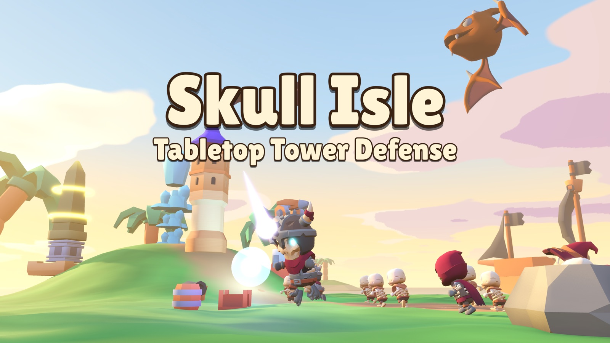
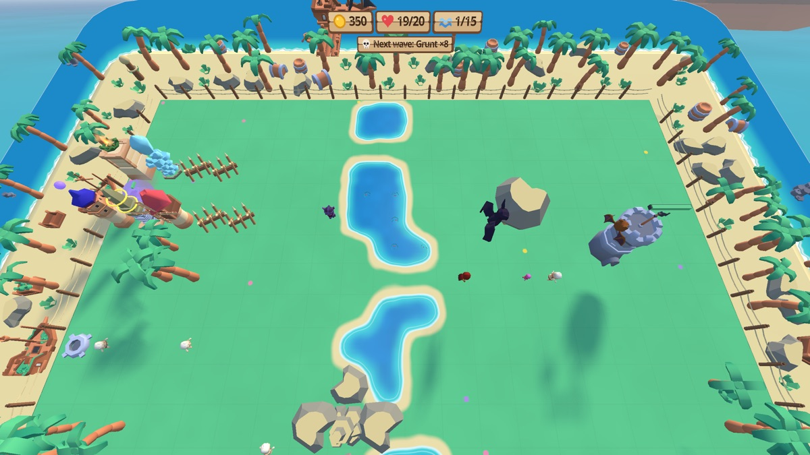
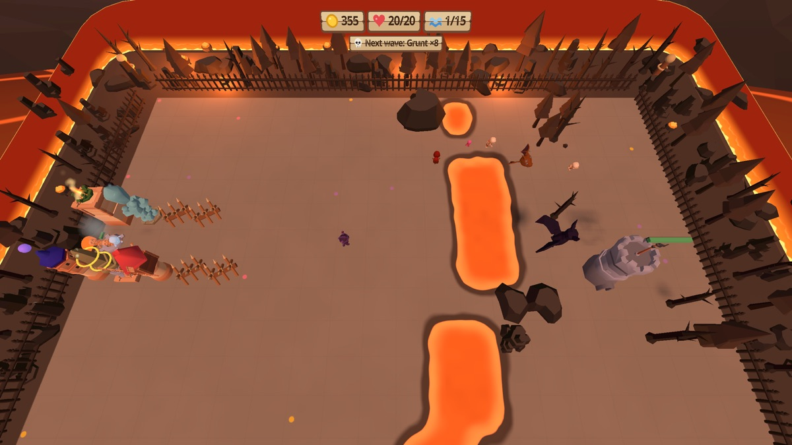
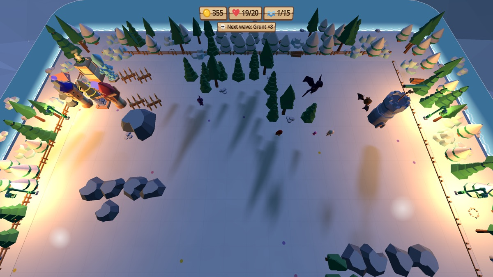
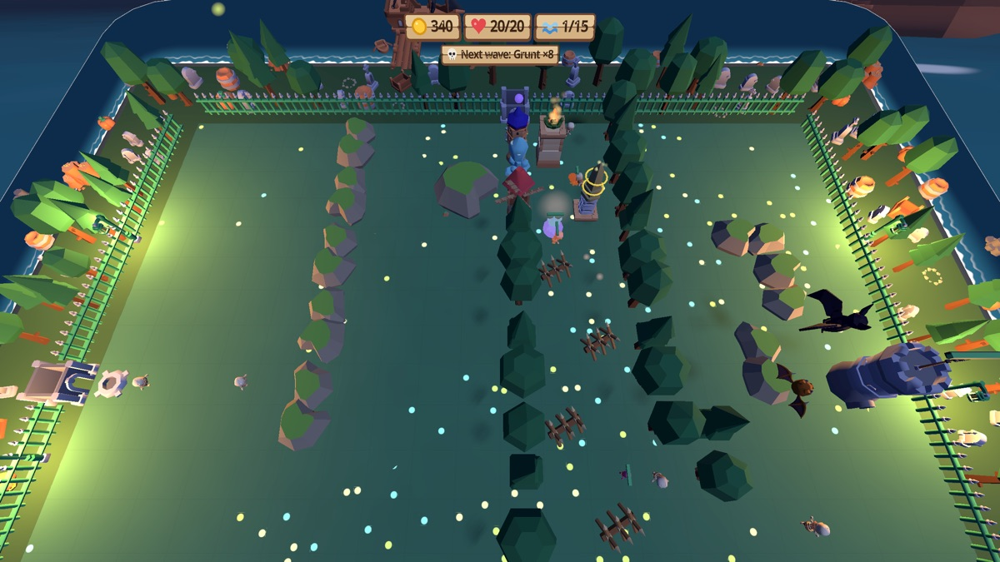

Skull Isle: Tabletop Tower Defense
Hold a tiny pirate island in your hands and defend it against skeleton hordes. Build towers like chess pieces, shape the maze they must walk through, and hurl bombs, frost grenades and meteors into the fight. 99 levels across 10 worlds, played with your hands or controllers.
Features
- 99 levels in 10 hand-crafted worlds, from sunny harbors to volcanoes and frozen peaks
- 10 building types and 6 throwable attacks
- 7 enemy types including flying bats and a dragon boss
- 3 difficulty levels and up to 3 stars per level
- A short training level that teaches you everything in a minute
- Play with hand tracking or Touch controllers, seated or standing
- Play in a painted world or in your own room with passthrough
- Available in English, Czech, German, Spanish, French, Polish, Portuguese, Japanese and Korean




Skull Isle: Tabletop Tower Defense
Drž v rukou malý pirátský ostrov a braň ho před hordami kostlivců. Stav věže jako šachové figurky, skládej z nich bludiště, kterým musí nepřátelé projít, a házej do boje bomby, mrazivé granáty a meteory. 99 úrovní v 10 světech, hraješ rukama nebo ovladači.
Co hra nabízí
- 99 úrovní v 10 ručně tvořených světech, od slunného přístavu po sopku a zasněžené hory
- 10 druhů staveb a 6 útoků, které házíš rukou
- 7 druhů nepřátel včetně letících netopýrů a draka
- 3 obtížnosti a až 3 hvězdy za úroveň
- krátký výcvik, který tě všechno naučí za minutu
- hraješ rukama nebo ovladači Touch, vsedě i vestoje
- hraješ v malovaném světě, nebo ve vlastním pokoji s průhledem
- čeština, angličtina, němčina, španělština, francouzština, polština, portugalština, japonština a korejština